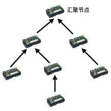
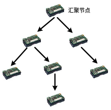
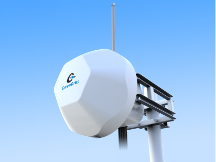
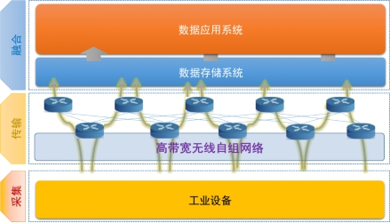
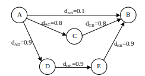
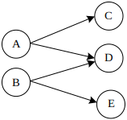
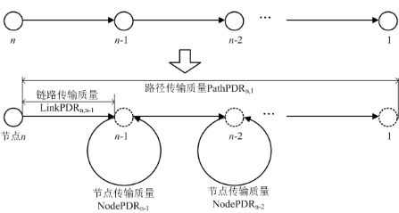
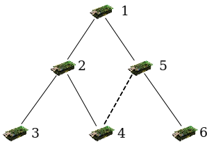

9.5 多跳自组织网络
无线****自组织网络
1. 网络****形成
越来越丰富的网络接入方法，使得无时不刻不在的网络服务成为了一种可能，也为物联网的发展提供了坚实的基础。今天我们拥有的大部分设备上都具备了无线WiFi、蓝牙、802.15.4等其中的一种或者多种的接入方法，设备能够通过不同方式连上网络。事实上，这么多种不同类型的网络接入手段，把时间提前十几年也都是无法想象的。技术的蓬勃发展正改变着人们的上网方式，以前在要使用互联网时到处找网线的场景，现在想起来甚至都觉得有一些不可思议。诚然，无线网络的接入技术发展为物联网发展注入了新的动力和可能，也使以前不太敢想象的应用成为可能。
与此同时，无线网络接入技术的进步和现代网络设施的不断完善，使得现代的人们能够随时随地享受上网的服务。各种不同的设备，大至我们的电脑、笔记本，小至智能手表、智能穿戴式设备等也都能随时随地的联网，也使人们产生了一种错觉：现有的无线接入技术似乎给我们提供了我们享受网络服务的全部保障，以至接入即联网。
如此方便的使用网络，以至于产生了一种错觉，似乎网络看起来是如此的简单。但必须要强调的是，网络远远比我们看到的要复杂。如果从软件设计的角度来看，网络绝对是可以看做一个非常复杂也精美的软件设计-----网络本身的结构是非常复杂的，就拿现在的互联网来说，已经很难或者说就没有人能完整的给出整个互联网的精确网络结构，更罔论里面多种多样的设备和用户了。但是从另外一方面，网络对于用户来说，又隐藏了他后面及其复杂的实现，提供给用户的接口极为简单，用户可以非常方便的上网。我们这一章就试图透过网络展现的简单接口，从网络组网的角度来探讨网络背后组网的技术发展。
如果是接入技术在通信中提供了类似耳朵和嘴巴的功能，那么把推动网络走向真实应用的重要一步就是多跳网络的形成，通过组成网络，使耳朵变成了“顺风耳”，眼睛变成了“千里眼”，设备互联起来组成网络的这么一个过程还有一个更为专业的名字称为网络路由。以互联网为例，网络中相距很远的两个设备通过了很多中继的设备相连。今天我们坐在计算机前，能够发送一条消息给远在美国的朋友，这就是多跳网络的功能。毋庸置疑，如果仅仅依靠网络接入技术，是很难实现这样的目标。读者也许已经对互联网的路由都有了一定的了解，简单来说，互联网中要实现远距离互联，需要以多跳的形式连接相距很远的两个设备。如果你仔细观察再加上耐心的去询问，你会发现你家里电脑上的网线连接到了家里的网口上，家里的网口又与网络服务提供商（电信、移动等）相连。当然电信联通的网络又与其他的网络连接到一起，最终使整个互联网都连接在了一起。为了管理方便，互联网里面网络不会是完全的扁平化管理，还分成了很多自治域。显而易见，只要自治域之间和自治域内部能够联通，整个网络也就联通起来。因此，也就出现了我们听到的不同的互联网路由协议。比如，自治域之间通过边界网关协议（BGP: Border Gateway Protocol）等连接起来，自治域内通过开放式最短路径优先（OSPF: Open Shortest Path First）路由协议连接起来。以OSPF协议为例，顾名思义，其选择的是两个设备之间的最短路径来作为连接两个设备的网络路径。
更为具体的说，作为网络研究领域的一个基础问题，路由协议的研究一直是一个热门话题。在传统网络如互联网中，为了使数据从互联网中的一个设备（如电脑）传输到另外一个设备，有着许多对路由协议的研究。比如距离矢量路由协议（Distance Vector Routing， DVR），网络中的每一个路由器对每一个目的地址都维护了一个下一个路由器的地址，具体来说，每一个路由器都维护了一个多行的表格，每一行都有一个目的地址和其对应的下一个路由器的地址信息，如目的地址是223.1.1.2，下一个路由器需要选择223.1.1.4。通过这样的信息，每一个路由器只需要根据每一个数据包的目的地址，将数据传输到对应的下一个路由器。依此类推，从而最终到达目的节点。同时为了网络管理方便，网络中的地址进行了分组。对于一个数据包，路由时首先确定其所属子网，先传输到对应的子网，然后再由子网中的路由器传输到对应的节点，这样能够大幅减少每一个路由器上记录的目的地址。
2. 自组织网络****背景
现有的互联网路由协议为数据传输提供了很好的基础。随着物联网技术的发展，现有的路由协议和组网方法也面临着一些新的问题，甚至出现了现有协议无法完全满足物联网的发展应用需要和发展要求的情况。以我们常听说的无线传感网络为例，无线传感网络可以通过部署无线传感器节点在人类无法通常无法达到或者便利地到达的区域，如森林、湖泊、岛屿上等，用来实现长时间在线监测环境或者完成其他目标。从应用的背景和面向的场景中，我们就能感到无线传感器网络中的路由面临着跟传统路由中不一样的问题，比如传统的互联通路由中，设备的连接是相对固定，比如网络服务提供商到用户家里的链路，不同网络之间的连接基本维持稳定，只要一栋大楼确定一个房间确定，对应的网线连接在修建这个房子的时候也是基本都建好的。在物联网的新背景下，网络出现了一系列新的特点。
**网络****结构不固定：**无线自组织网络的第一个重要特征就是网络中的每一个节点与其他节点自组相联，形成网络。网络中可能没有与互联网类似的固定的网络结构。无线自组织网络设备多种多样，网络需要处理频繁节点移动，加入和退出的操作，路由协议需要能够自组成网，比如当网络规模变化和节点位置变化时，能够正确的传输数据。
**设备性能****不****强：**无线自组织网络的设备不同于传统互联网的设备。无线自组织网络中，存在着多种多样的设备，有很多设备通常性能有限，如节点的计算、存储和通信开销都较传统设备小，如无线传感网里面广泛使用的传感器节点TelosB只有8MHz的MCU和10KB的内存，计算能力非常有限，同时节点的传输带宽只有250kbps，比传统传输设备大大减小，这样的节点性能为无线传感网的路由带来的新的挑战。首先，节点上不能存储太多的信息，像传统互联网路由器一样存储整个路由表几乎是不再可能，因此节点需要更有效的方法来计算合适的路由路径。物联网的一个重要目标是连接物理世界的所有设备，可以想象的是，如果真能够将这一些设备连接起来，我们不能也没有必要期待每一个设备都具备很强的通信、计算和存储的能力。
**能量供给不****稳定：**很多无线自组织网络里面的设备由电池驱动，能量来源非常有限，每个节点能量消耗需要降低，以满足设备长期使用要的要求。同时，多个设备上的能量消耗要要均衡。因为如果部分设备能量消耗完了之后，会导致整个网络功能的降低，甚至不能正常组网和工作。降低能量消耗，均衡设备能耗，是物联网中自组网路由协议面临的重要问题。
链路特征不一样**：**无线自组织网络中的无线链路较以往有线链路，有很多新的特点。比如链路有非对称性，具体来说，不同与有线链路，无线自组织网络中的链路很可能是不对称的，同一条链路正向的链路质量和方向链路质量可能截然不同，在实际协议设计中需要考虑非对称性的影响。链路不对称性对自组织网络路由协议的影响是多方面的，比如在无线自组织网络中，数据发送者向接收者发送一个数据包，接收者通常要向发送者返回一个ACK作为确认。可以看出，如果反向链路质量不好，ACK会有很大概率被丢掉，在发送端从而错误的认为数据包发送失败。因此在实际数据传输中，需要避免使用这样的链路。同时物联网设备由于所处环境的不同，链路可能还具有高动态性。传统的有线链路的链路质量相对稳定。无线自组织网络中由于受到外界环境等的影响，链路有很强的动态性。正如哲学家赫拉克利特讲的，人不可能两次跨进同一条河流。前面测量链路质量较好的链路在一段时间后可能会变差，因此对无线自组织网络路由协议提出了新的要求，一方面无线传感网的链路测量必须实时的反映链路的真实质量，另外一方面，得到真实链路质量意味着较高的测量开销。因此无线传感网的链路测量能量消耗必须减少，频繁的链路测量在无线自组织网中并不可取。
链路相关性**：** 无线自组织网中另外一个重要的链路特征是链路相关性。链路相关性有两个方面的重要特征。首先是链路的时间相关性，具体表现为同一条链路在连续的时间段内的链路质量是相互关联的。比如一个链路上连续的两次发送数据包他们之间并不是独立的，存在着一定的相关性的。相关研究中把这一种短时间内链路的相关性叫做bursty性质[1]。对于一个链路，前面一个数据包发送成功的情况下，后面一个数据包也有很大的概率能够发送成功。无线自组织网在使用链路的时候，需要考虑和利用链路的这种性质，如通过这种性质有效的避开在链路上连续发送不成功的情况，合理利用数据包能够被连续发送成功的情况。另外的一种相关性为链路的空间相关性[2]，具体表现为在空间上相近的两条链路其数据包发送会呈现正相关或者负相关的特性。当两条事实上链路正相关时，其中一条链路收到数据包，另外一条链路也有很大概率收到数据包，其中一条链路丢失了数据包，另外一条链路也有很大的概率丢失数据包。相反的，如果两条链路负相关，这两条链路对数据包的接收将会呈现完全相反的特征。链路的这种相关性可能是由于链路所处的环境等多个因素引起的。链路的相关性也是无线自组织网络协议设计过程中需要考虑的重要属性。
[1] Kannan Srinivasan, Maria A. Kazandjieva, Saatvik Agarwal, and Philip Levis. The β-factor: measuring wireless link burstiness. [2] Kannan Srinivasan, Mayank Jain, Jung Il Choi, Tahir Azim, Edward S. Kim, Philip Levis, and Bhaskar Krishnamachari. 2010. The k factor: inferring protocol performance using inter-link reception correlation.
**异构网络互联：**无线自组织网络由于应用范围的广泛，还有两个重要特点，第一就是设备数量多，第二就是设备种类多样，针对这两个问题，无线自组织网络路由呈现了新的特点。首先由于异构网络的存在，需要多种不同类型的网络能够共同存在，互相兼容，如无线自组织网络的路由协议需要兼容现有的互联网协议，是无线自组织网络的数据能够利用互联网进行传输。其次，无线自组织网络伴随着物联网应用将深入到生活各个方面，设备的数量也会大大增加，因此需要能够对网络中所有设备进行寻址和数据传输，如何在大量设备存在的情况下设计高效的寻址模式和数据传输协议将会是重要问题。
3. 自组网路由协议
3.1 协议****设计
针对物联网应用的新特点，物联网环境中的路由算法也产生了新的变化，比如，原来传统路由中考虑的相对固定的路由环境可能不再存在。在考虑到物联网连接设备的多样性，自组织网络协议也就应运而生。我们以物联网中常见的无线传感网络及其中的自组网协议来进行说明自组网协议的特点。在一个典型的环境感知无线传感器网络中，每个传感器节点可以独立收集信息，然后通过路由协议收集到汇聚节点上。同时，网络管理员可能需要配置网络的参数或对节点软件进行更新，这时也需要通过路由协议将配置参数或者需要更新的代码可靠的传递给网络中的每一个节点。从广义上来看，上述两个应用场景代表了两类不同的路由协议设计，一类是数据收集协议，即将多个传感器节点上的数据收集到汇聚节点上（如图1），一类是数据分发协议，即将汇聚节点上的数据分发到网络中的每一个传感器节点（如图2）。我们这里将数据分发协议也考虑在了路由协议中，主要是由于首先数据分发协议是无线自组网的一种重要的协议形式，在无线自组网中应用广泛，体现了自组织网络路由的重要特征。需要注意的是，不管在数据收集还是数据分发的应用场景中，无线传感器网络中的节点不是固定的，节点可能随时会退出，也可能会有新的节点随时加入网络。同时节点的电量和能力都是有限的，网络和节点具备有一系列新的特点。
|  |  | | -----------------------------------. | .----------------------------------- | | 图1：数据收集协议 | 图2：数据分发协议 |
下面我们主要以这两个协议为主要的案例，来分析无线自组织网络路由协议的设计基本原理，同时看看当前无线自组织网路由协议怎么针对网络特点进行设计。本节将首先介绍典型的自组网数据收集协议设计，即数据收集协议CTP[4]。其中会同时介绍一个广泛使用的路径选择指标ETX[3]，通过对ETX的介绍来了解无线传感网典型的链路测量方法是如何实现的。
[3] Douglas S. J. De Couto, Daniel Aguayo, John Bicket, and Robert Morris. 2003. A high-throughput path metric for multi-hop wireless routing. In Proceedings of the 9th annual international conference on Mobile computing and networking (MobiCom '03).
[4] Omprakash Gnawali, Rodrigo Fonseca, Kyle Jamieson, David Moss, and Philip Levis. 2009. Collection tree protocol. In Proceedings of the 7th ACM Conference on Embedded Networked Sensor Systems (SenSys '09).
[5] G. Tolle and D. Culler, “Design of an application-cooperative management system for wireless sensor networks,” in Proceedings of the 2nd European Workshop on Wireless Sensor Networks (EWSN 2005).
CTP（Collection Tree Protocol）是目前广泛使用的自组织网络数据收集协议之一，由斯坦福大学一个研究组提出，并在TinyOS中进行了实现。CTP的基本工作方式如下。在初始化阶段，网络中每个节点广播自己到汇聚节点的路径质量。在这一过程中，CTP路由协议设计了一个叫做期望传输次数ETX的路由指标，稍后我们再详细介绍这一指标的特点。每个节点收到广播包之后，依据邻居节点广播的路径ETX，动态选择父节点，使得自己到汇聚节点的路径ETX尽量小。最后，经过不断更新，网络中的每个节点都能够选择到一条到汇聚节点ETX之和最小的路径，在每一个节点上只需要记录这条路径上的上一跳节点，即该节点的父节点。每一个节点的数据包将发送给父节点，最终通过多跳的方式收集到汇聚节点。
当然，考虑到物联网尤其是无线传感网的一系列特点，CTP还进行了针对性的设计。为了在有新的节点加入或者说有节点退出的时候，能够迅速找到最好的路由路径，协议会不断更新路径的质量。为了能更准确的选择较好的路径，在链路质量估计方面，协议综合了来自多方面的信息。CTP不仅通过主动交换控制包来估计链路质量，而且通过被动侦听数据包来动态更新链路质量；同时CTP协议不仅考虑了链路层信息，而且考虑了网络层队列是否溢出的信息，以此来避免拥塞的节点。在控制包发送方面，使用了Trickle算法来自适应的控制发包的频率。在网络稳定的时候，Trickle算法二进制增长发包间隔，以减少发送包的数量。在发生环路或其他异常情况时，Trickle算法缩短发包间隔，使网络能及时恢复到正常状态。
笔者的团队也进行了很多无线传感网自组网路由协议的实验和应用。比如团队部署了室外大规模无线传感器网络，研究并实现了大规模无线传感器网络的路由协议，支持千量级的无线传感器网络节点自组网数据通信。可以想象，在室外部署的无线传感器网络节点会面临着各种各样的问题，包括节点故障、电量耗尽甚至丢失等等，如何在各种情况下保持网络的通畅是自组网协议首先要解决的一个重要问题。
同时，自组织网络的特点使得其应用范围已经扩展到了工业等各个领域。在工业领域，自组织网络也能发挥重要的作用。近年来，远距离高带宽的自组织网络方面也有很多新的进展。图1展示的是最新的无线远距离高带宽的自组织网络节点，该节点具备自组成网的功能，通过在生产区域部署这种节点，节点能够将工业生产中的数据包括生产数据、视频数据等传输到指定的节点。图2展示的是该远距离高带宽的无线自组织网络应用到实际工业生产中的系统架构图。利用自组网络节点，能够有效支持工业化4.0时代的应用需求，为工业化4.0助力。

图1. 远距离高带宽的无线自组织网络节点

图1. 工业生产****中的无线****自组****网络
3.2 路由指标
在路由协议中，一个重要的功能就是如何判断一个路径的质量。实际上，判断路径质量有不同的方法，可以根据传输的延迟，例如有些应用中需要选择延迟最小的路径。可以选择传输的开销，例如有些应用需要选择传输开销最小的路径来节省节点的能量等。当然也可以综合考虑多个指标，比如综合考虑延迟、开销等。CTP协议中用到的ETX指标是考虑的传输开销，也就是说每一个节点选择的是一条传输开销最小的路径。如果网络中的无线链路都是完全可靠的，即收包率为100%，则使用最小跳数路由的方式使得整个路径总的传输开销（即传输次数）是最小的。在实际的无线网络中，无线链路是不可靠的。因此，在实际网络中较小的跳数并不代表最少次数能够把数据包传输到汇聚节点，而且使用最小跳数路由可能会引起很大的传输开销。
使用ETX的路由协议通常具有如下假设。所有传输具有链路层ACK机制，即当一个数据包在一条链路上传输成功时，源节点会收到目的节点的ACK包。同时，源节点具有较大的重传次数保证数据包传输的可靠性。通常我们使用收包率PRR (packet reception ratio) 来刻画一条链路的质量，用来表示数据包和ACK包发送成功的概率。我们考虑从一个源节点向目的节点发送数据的单条链路，记df为从源节点到目的节点的收包率，dr为从目的节点到源节点ACK的收包率，则从源节点到目的节点传输成功一个数据包（并且发送者能够成功的收到ACK）所需要的传输次数为：
ETX = 1/(df×dr)
一条路径的ETX为构成该条路径的所有链路的ETX之和，即在这条路径上传输成功一个数据包所需要的传输次数。

图3 关于ETX指标的一个例子
图3显示了从源节点A到目的节点B的三条路径。图中标识了每条链路的收包率（假设链路反向的收包率dr均为1）。我们看看不同路径的ETX。
1) 路径AàB。直接从节点A传输到节点B，由于链路发送成功率为0.1，即传输成功一个数据包会引起10次传输。因此，ETX AàB=10。
2) 路径AàCàB。在链路AàC上会引起1.25次传输，在链路CàB上也会引起1.25次传输。因此，ETX AàCàB=1.25+1.25=2.5。
3) 路径AàDàEàB。在链路AàD, DàE, EàB上均会引起1.11次传输。因此，ETX AàDàEàB=3.33。
由此可见路径AàCàB是三条路径中ETX最小的路径。图3显示的例子也说明了ETX指标既不选择较长的路径（如AàDàEàB），也不选择较短的路径（如AàB），而是选择了两者的一个折中——具有最小传输代价的路径。
由ETX的设计可以看出，使用ETX作为路由指标具有如下好处：通过把传输代价最小化，ETX提高了带宽利用率，并有效减少传感网能量消耗；通过测量双向链路质量，ETX能有效避免非对称链路。
3.3 链路相关性与****自组网路由协议
传统的数据收集协议里面主要使用的链路为长时间稳定的链路，而避免使用短时间稳定的链路，避免带来的路由不稳定。但是由于链路时间相关性的存在，实际上短时间稳定的链路也可以利用来有效提高数据收集协议的性能。研究工作[7]提出了利用短时间稳定的链路（bursty link）来提高数据收集协议性能的方法。简单的说，研究工作[4]测量了短时间内收包率很高或者都很低的链路，对于短时间内收包率比较高的这些在传统路由协议中都不使用链路，可以机会性的选择利用。同时，对于短时间内收包率都很低的链路，要设计协议合理的避免这样的链路来提高路由协议的性能。
[7] Muhammad Hamad Alizai, Olaf Landsiedel, Jó Ágila Bitsch Link, Stefan Götz, and Klaus Wehrle. 2009. Bursty traffic over bursty links. In Proceedings of the 7th ACM Conference on Embedded Networked Sensor Systems (SenSys '09).
4. 自组网数据分发协议
数据分发协议的作用与数据收集协议的作用相反，主要作用是将数据包可靠的传输到网络中的每个节点。本节将以无线传感网中广泛使用的Drip[5]协议为例，来介绍无线传感器网络中自组织网络数据分发协议的基本工作方式与特点。
协议的基本工作方式如下。由于协议会不断更新数据，协议为每一个数据项对应一个版本号，版本号越高的数据为越新的数据。网络中每个节点周期性的广播关于一个数据项的版本信息。当一个节点发现自己的数据需要更新（即发现邻居节点的版本信息更高）时，则向邻居节点发送请求包。收到请求包的节点然后广播关于该数据项的数据包。这样使整个网络的数据达到最新的状态。
值得一提的是，数据分发协议与基本的洪泛协议存在本质的不同。基本的洪泛协议仅仅将数据包广播，而没有考虑传输的可靠性，也不保证每一个节点拥有最新的数据。数据分发协议维护了每一个数据项的版本信息，并保证该数据的最新版本能够可靠的扩散到整个网络。
前面已经介绍过来数据收集协议，下面我们来看如何针对链路的特征如链路相关性来改进路由协议的性能。在传统的数据分发协议中，每一个节点需要将数据进行广播，成功收到数据包的节点需要对发送者发回确认包。但是，在无线数据分发协议里面，每一个节点的确认包将会带来大量的数据冲突和延迟，影响分发协议的性能。
由于链路相关性的存在，可以对数据分发协议进行改进。考虑具有正相关性的两条链路，如果其中数据包在其中一条链路上传输成功，那么在另外一个链路上也有很大的概率传输成功，因此在这种情况下，只需要其中的一条链路发送确认数据包，数据包的发送者就能够估计有很大的概率另外一条链路上的数据包也发送成功了。我们以图4中一个简单的例子来说明如何利用链路的相关性来改进数据分发协议的性能。

图4. 数据分发协议的性能
图4中有5个节点，首先如果AC和AD链路相关性很高，那么A向C和D发送数据的时候，只需要收到其中一个节点发回的确认，就可以推断C和D两个节点有很大概率都收到了，因此链路相关性可以用来减少ACK发送的次数，从少量的数据包中挖掘出更多的信息。基于这个发现，在研究工作[6]中提出了条件收包概率这一概念。具体来说，条件收包概率P(l1|l2)指的是链路l2收到数据包的情况下l1能够收到数据包的概率。根据条件收包概率，在进行数据分发的时候，网络中的每一个节点都会动态地测量一个传输有效性。传输有效性就是指发送一个数据包能够覆盖到的节点的数目和概率。一次传输能够覆盖到的节点越多，覆盖的概率越高，这次传输的有效性就越高。因此在数据分发协议中，每一次选择传输有效性高的节点进行数据传输，能够加快数据分发到整个网络的速度，减少分发的时间。这也是体现了物联网特点对自组织网络数据分发协议带来的影响。
[6] Ting Zhu, Ziguo Zhong, Tian He, and Zhi-Li Zhang. 2010. Exploring link correlation for efficient flooding in wireless sensor networks. In Proceedings of the 7th USENIX conference on Networked systems design and implementation (NSDI'10).
近几年无线网络通讯的发展，出现了许多基于无线自组网的应用系统。比如，无线传感网利用自组织成网络的小体积，低能耗，短通信半径的无线传感网节点，在特殊环境如野外、森林、海岛上进行工作，感知并采集外界环境和监测对象的信息，并将信息以无线的多跳方式传回基站。因此，无线多跳传输作为无线传感网的应用基础，在无线传感网实际应用中显得尤为重要。
在一个多跳的网络中传输，通常采用的方法是先建立一个路由方案，然后在这个路由方案的指导下每一个节点选择对应的下一个节点并将信息传递给该节点，直至到达目的地节点。在传统的路由技术中，假设每一个节点都知道自己的位置信息和目的地节点的位置信息，路由策略如下：
\1. 每个节点寻找一个距离目的地节点比自己更近的节点作为下一跳节点，若有这样的节点，则重复1直到目的地；如果没有这样的节点，则
\2. 该节点所有邻居节点距离目的地都比该节点距离远的时候，该节点就会采取右手定则的原则，选择一个顺时针方向的遇到节点中的第一个节点作为下一跳，然后转到1。 这样的路由要求每个节点必须有自己和周围邻居节点精确的位置信息。现有的基于全球定位系统（GPS）的节点不适合于很多实际应用，比如没有GPS信号的室内和地下环境。传感网中也有很多定位算法（localization algorithm）可以获得节点的位置，但是在实际网络中，很有可能有一部分节点是无法通过任何定位算法获得准确位置信息。
由于基于位置的方法路由很多情况下并不适用，而且这样的路由方法并没有考虑的链路质量，所以这样的方法在利用无线传感网传送信息如图像的时候，考虑到无线传感网中链路的不稳定特性，无法在最快的时间传送完所有的信息，从而导致了信息的延迟和发送时间变长带来的更多能量消耗。另外一类的路由方法是基于链路质量的，比如基于链路信号强度（Radio Signal Strength Indicator, RSSI）路由策略。目前无线传感网中使用最多的路由方案为收集树路由协议。该协议由美国斯坦福大学提出，基于链路的最小期望传输次数（Expected Transmission Count，ETX）。链路最小期望传输次数为该链路上要成功的传输成功一个包所需要的期望总传输次数，比如链路的发包成功率为 q (即每个包有概率*q*传送成功，0£q£1)，则该链路的最小期望传输次数则为1/q。收集树路由协议在进行路由的时候就选择所有路径中的最小期望传输次数最小的路径。
收集树路由协议尽管作为现在使用得最多的协议，它仍然存在着各种问题，尤其在实际应用中存在着与实际系统相关问题：首先，收集树路由协议并没有考虑到节点本身的内部的丢包，而只考虑到了路径上所有链路的质量，并不符合实际系统的应用情况。其次，收集树路由协议并没有考虑到路径上链路和节点在路径上的排列顺序对路径的影响，等下我们将会介绍链路顺序对路径质量也有着非常大的影响。收集树协议并没有考虑到节点重传次数对路径质量的影响，在实际系统中，节点重传次数设置是跟应用紧密相关的，其对路径质量的影响也是不一样的。收集树路由协议基于重传次数为无限的假设，并为考虑到重传次数的影响。
发明内容
为解决现有技术问题，本发明提出一种新型基于转发质量的路由方法，针对目前现有的路由方法中对路径质量的估计的不完整和不合理性，着重考虑了路径上节点本身质量对路径质量的影响，和节点和链路在路径上出现的顺序对路径质量的影响，从而选择一条路径质量最好的路径。理论证明该方法综合了路径上影响数据传输的所有因素，能够选择一条吞吐率最大的路径。实际系统中的应用结果也证明了该方法能够比目前世界上最广泛使用的传感网中最新的路由算法有着更高的性能。
本发明所述基于无线传感网路径转发质量的路由选择方法，是通过如下方法实现的：
对每一个节点，分别计算该节点经过其各邻居节点到目的节点的各路径的路径转发质量，选择其中路径转发质量最高的一条路径作为传输路径；并且将这个最高的路径转发质量对应的那个邻居节点作为其父节点，即路由中的下一跳节点；
所述路径转发质量是指在一条路径上发送成功一个数据包需要的总的传输次数，其中总的传输次数指该路径的每一条链路上传输次数的总和。不同于以往计算方法中基于总的传输次数或者传输成功质量的路由方法。
进一步地，
对于一条由节点n到节点1的路径，首先将该路径上的n个节点依次编号，目的节点为节点1，源节点为n。其路径转发质量PathQualityn,1计算如下：
该路径的路径转发质量Pathn,1根据下式获得：
其中，PathPRR是指在这条路径上的总的传输质量，PathOverhead是指在这条路径上传输单个数据包带来的传输开销。通过这样的方法能够计算出整个路径的完整链路质量。
进一步，如图1展示的一条链路，其中第i个节点和无线链路的数据传输成功率为QNi和QLi。则通过这条完整链路能够传输成功的数据包的概率为
同时，传输单个数据包在链路Lk上的传输开销为OLk, 则在整条链路上的传输开销为
通过这样的方法，则能够计算完整的链路转发质量。
其中QNn为节点内部的数据传输成功率，通过统计在无线网卡处收到的数据包和实际网络转发中转发的数据包来计算，计算方法如下：
其中Cn节点n上无线网卡收到的数据包，Fn为节点n上实际转发的数据包。
QLk表示为第k个无线链路Lk上的数据传输质量，可以如下计算
其中pk为无线链路单个数据包的传输成功概率，rk链路上允许的重传次数。
OLk为在无线链路上单个数据包带来的平均传输开销，可以如下计算
其中表示数据包传输成功时单个数据包带来的传输开销，表示数据包再达到规定的重传次数后仍然没有传输成功带来的传输开销。
pk可以如下计算
在网络开始前，节点k发送x个数据包，统计在节点k-1上收到的数据包y，则
方法特点：
\1. 发现了节点本身丢包特征以及其丢包对路由影响。节点丢包在以前所有路由协议中都没有考虑到，导致了以前所有路由策略的不准确性和对路由估计的不完整性。
\2. 该方法考虑了节点位置和链路位置对路由质量的影响。对于同样的一条链路，按照不同顺序排列节点对最后的路由质量有着非常大的影响，这也是以前方法中没有考虑到的。
\3. 由于传感网节点的本身不稳定性，目前所有的方法都不可能保证传感网节点100%可靠。该方法不依赖于假设节点100%可靠，相反使用该发明提到方法能够有效避免由于传感网节点的不稳定性带来的对数据收集的影响。
\4. 该方法考虑到了重传次数对路由的影响，这在收集树路由协议中也是没有考虑到的。
\5. 可分布式计算，每个节点可以根据其他节点发送的信息计算对应到根节点的转发质量，不需要集中服务器来进行计算
\6. 复杂度低，需要的信息非常有限，适合应用于低能耗需求的无线传感网系统
对比现有技术，本发明提出的方法基于转发质量，具有以下特点和有益效果，是目前所有无线传感网其他路由技术所不具备的（包括最广泛使用的收集树路由协议），该方法也解决了现有方法中所不能解决的若干亟待解决的问题。具体特点描述如下：
综合来看，目前无线传感网应用受到链路不稳定性和节点不稳定性影响比较严重，本发明提出方法有效解决了该两方面问题。在保证路由稳定性的前提下，本方法能够兼顾选择开销最小的路径，有效减少能量有限的传感网节点上的能量消耗。
附图说明
图1. 转发质量计算图示；
图2. 转发质量具体实施示意图。
具体实施方式：
1. 实际节点和链路参数测量：
1） 各节点的****内部链路数据包传输成功率QN****k**：**首先计算无线传感网上进入该节点的数据包数目*a*，即该节点收到的数据包的数目，可以通过统计该节点中由数据访问控制层（MAC）递交到网络层（NET）的数据包的数目获得；然后统计该节点发出的数据包数目*b*，可以通过统计网络层递交给介质访问控制层的数据包的数目获得；**QN****k**即可以通过计算*b*/*a*得到。
2） 各物理链路质量****P****k**,j****：**即节点k发送的数据包中被接收节点j收到的数据包所占的比例；即在节点k上统计总共发出的数据包*a*，然后统计这些发出的数据包中被接收节点j正确收到的数据包*b*；b*可以由接收节点主动反馈给发送节点，然后通过计算*b/a*得到**P****k***,j**；
3） 各****物理链路****的****数据包传输成功率QN****k**,j****：可以由物理链路质量*p**k,j*和预设的重传次数*r**k*计算得出。
4） 各物理****链路****的****传输次数****OL****k**,j**：可以由物理链路质量**QN****k****,j**和预设的重传次数*r**k*计算得出。
第二部分为节点操作部分，即分布式算法部分，主要为节点需要发送的数据包和收到数据包后需要进行的计算操作。每个节点只需要进行如下的一些操作，即可完成路径转发质量的计算，并在路径转发质量的计算过程中，选择一条转发质量最高的路径。
2. 将网络中根节点1的路径完整链路质量初始化为PathQuality1,1=1，PathPRR1,1=1。
3. 节点1广播自己的PathPRR1,1，PathQuality1,1, QN 1。
4. 网络中其它节点则根据收到的广播信息，则根据收到的广播信息和实际节点和链路参数测量信息，按照如下方法更新自己到目的节点1的路径转发质量：
对于节点i，收到节点j的广播信息PathPRRj,1，PathQualityj,1，按照下式计算从节点i经过节点j到目的节点的路径转发质量PathQualityi,1：
计算完成后，节点i转发对应的 PathPRRi,1，PathQualityi,1, QNi。

图3

图4
5. 总结¶
路由协议是数据传输的基础。在无线自组织网络中，路由协议又面临着新的问题和挑战。只有真正的实现高效的路由协议，才能实现真正的“万物相连万物生”的愿景。从传统的路由到无线自组织网络的路由，路由所面临的问题也是不断更新。由以上的案例分析可以看出，现有的路由协议已经开始针对无线组织网的特点对路由协议进行改进和重新设计。同时，无线自组织网络的路由研究方兴未艾，下面几个方面的研究将会使路由协议日臻完善。本章介绍了现有自组织网络的一些主要设计思路，当然物联网应用环境复杂，应用总类繁多，面向的场景又各有特点，自组织网络协议设计需要考虑实际应用时的不同问题，设计的需求和要点不一而足，还需要在面向实际问题时具体问题具体分析。20世纪60年代，互联网初现雏形，历经50余年，无线自组织网络的研究方兴未艾，其中自组织网络中以无线传感网为先锋的物联网研究也风头正盛，从互联网到自组织网络，路由的研究稳步向前，从未止步。